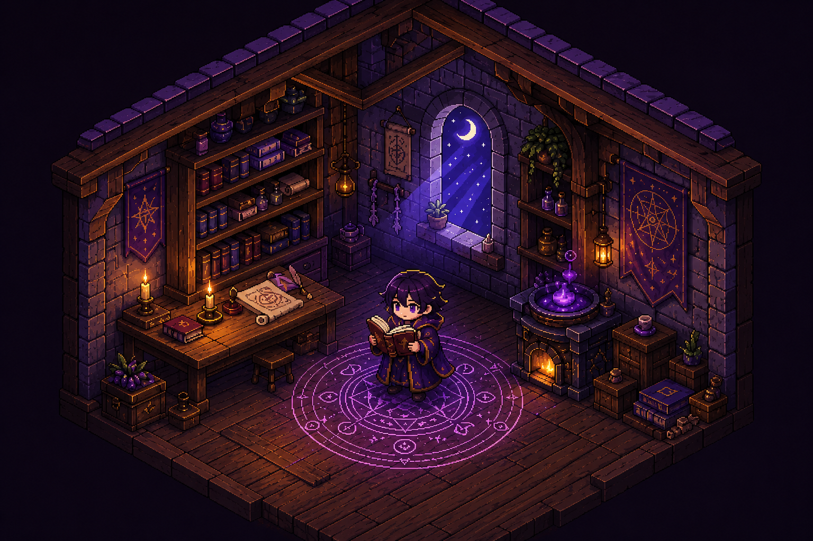
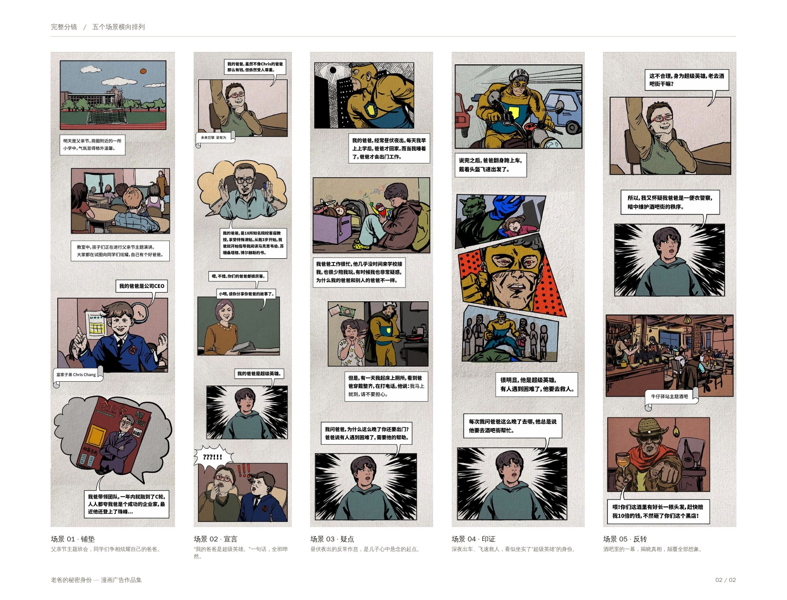
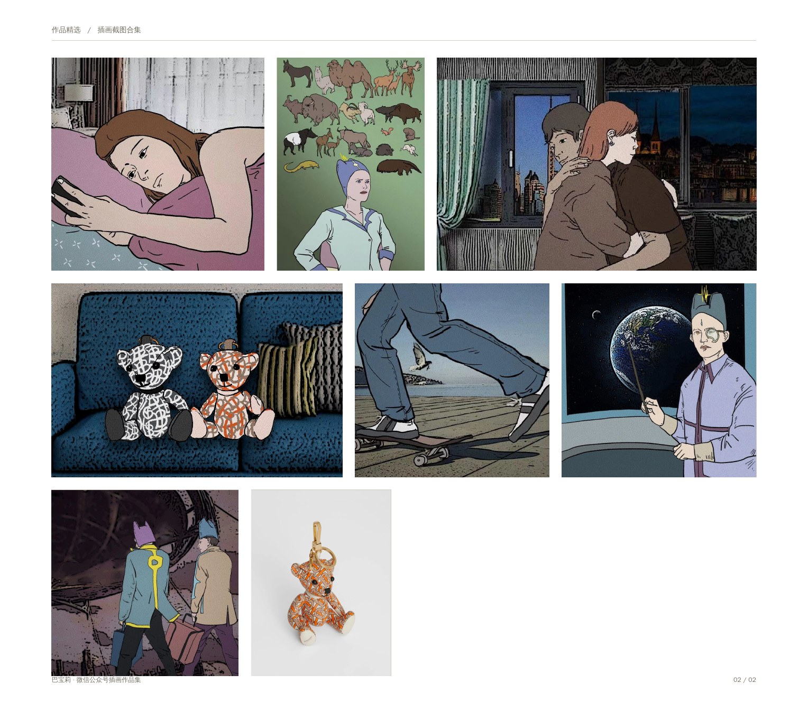

PROJECT / 001GUILD LOGNO SUCH
FLOOR
一款结合四人在线合作、身份分配与非对称追逃的第一人称梦核恐怖游戏概念。白天，四名玩家在普通公司工作与探索；夜晚，公司会依据当天的共同经历重构为主题后室，其中一人成为由白天行为塑造的“主人”，追猎其余三人。
概念开发中这层楼记得你今天做过什么。
这里收集我用设计、故事与技术重新组织体验的项目。第一个项目从日常任务出发，把完成事项变成一段可以被记住的幻想旅程。

PROJECT / 001GUILD LOG PROJECT / 003THE FLOOR REMEMBERS
PROJECT / 003THE FLOOR REMEMBERS一款结合四人在线合作、身份分配与非对称追逃的第一人称梦核恐怖游戏概念。白天，四名玩家在普通公司工作与探索；夜晚，公司会依据当天的共同经历重构为主题后室，其中一人成为由白天行为塑造的“主人”，追猎其余三人。

PROJECT / 004DIDI · FATHER'S DAY
PROJECT / 005BURBERRY · WECHAT